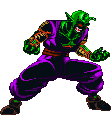
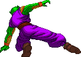
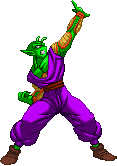

activate Demon Mode (LV2)
Activating Demon Mode gives Piccolo a dark edge, tapping into his latent demonic power.
This changes a few things, gameplay-wise.
-Upon activation, you will see an empty Demon Bar and a grey kanji added to the screen. The Demon Bar can fill up three times and the kanji changes colors each time. Grey = Lv0, Yellow = Lv1, Orange = Lv2 and Red/Pink Flashing = Lv3/Max.
- Using any 'demon' moves fills the Demon Bar. These include the Standing Strong Punch, Double Claw, forward throw, Eye Laser, Destructive Wave, Mystic Harpoon, Mental Shock, Trap Blast and Trap Blast Break.
- EX Mystic Harpoon's ender changes from a Mouth Blast to a souped-up Eye Laser. In comparisson, the Eye Laser ender does 20 more damage, has a faster recovery time and keeps P2 air born a tad longer.
- Special Beam Cannon uses the Demon Bar instead of the Power Bar as it's power source. It becomes unchargeble but will instead instantly fire the Lv1, Lv2 or Lv3 version if you're at Lv1, Lv2 or Lv3 of the Demon Bar.
- d+SK Sweep becomes Savage Sweep (detailed below).
- Trap Blast becomes available (detailed below).
- Dead End and Seeking Bullet become free, but cancel the mode.
- Hellzone Grenade costs Lv2 instead of Lv3 and takes you out of the mode.
- Depending if you're on Lv1, Lv2 or Lv3 of the Demon Bar when you activate the Hellzone Grenade, Piccolo will perform a unique Finisher at the end.
-Upon activation, you will see an empty Demon Bar and a grey kanji added to the screen. The Demon Bar can fill up three times and the kanji changes colors each time. Grey = Lv0, Yellow = Lv1, Orange = Lv2 and Red/Pink Flashing = Lv3/Max.
- Using any 'demon' moves fills the Demon Bar. These include the Standing Strong Punch, Double Claw, forward throw, Eye Laser, Destructive Wave, Mystic Harpoon, Mental Shock, Trap Blast and Trap Blast Break.
- EX Mystic Harpoon's ender changes from a Mouth Blast to a souped-up Eye Laser. In comparisson, the Eye Laser ender does 20 more damage, has a faster recovery time and keeps P2 air born a tad longer.
- Special Beam Cannon uses the Demon Bar instead of the Power Bar as it's power source. It becomes unchargeble but will instead instantly fire the Lv1, Lv2 or Lv3 version if you're at Lv1, Lv2 or Lv3 of the Demon Bar.
- d+SK Sweep becomes Savage Sweep (detailed below).
- Trap Blast becomes available (detailed below).
- Dead End and Seeking Bullet become free, but cancel the mode.
- Hellzone Grenade costs Lv2 instead of Lv3 and takes you out of the mode.
- Depending if you're on Lv1, Lv2 or Lv3 of the Demon Bar when you activate the Hellzone Grenade, Piccolo will perform a unique Finisher at the end.


Savage Sweep
When in Demon Mode, Piccolo's simple d+SK sweep animation changes
and you're able to follow-up with MK and then SK, resulting in a
Final Bout-inspired triple rising kick.



Trap Blast
A child version of his Hellzone Grenade,
Piccolo can place energy balls all across the sky to hinder the opponent.
QCF+K balls are shot at a diagonal angle, while the QCB+K balls
are created above Piccolo, and then travel on a horizontal (and squiggly) trajectory to their destination.
Weak Kick places balls close to Piccolo, while SK balls are placed far across the screen.
The balls are inactive when they float to their position,
but become solid objects as soon as they're placed.
If the opponent touches one, it explodes. If you've created a bunch of Trap Blasts, the opponent might
be juggled from Trap Blast to Trap Blast. Yeah, take it!
The balls can also be detonated: d,d+P for the QCF+K versions, and d,d+K for the QCB+K versions.
Keep in mind that you need to use the same button to detonate each version: d,d+LP for a QCF+LK Trap Blast,
d,d+MP for a QCF+MK Trap Blast, etc.
There's a 6 ball on-screen simultaneously limit to the Trap Blasts, regardless of on which level you're at.